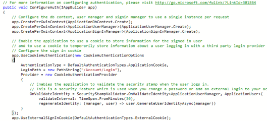
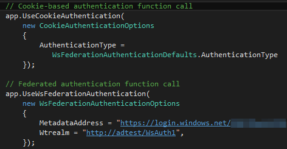

At the top of the Startup.cs file for an MVC application, we find import statements for Microsoft.Owin and Owin. These are imports are for the ‘Open Web Interface for .NET’, a technology for launching application modules, or ‘middleware’ between the application and IIS. One of the things OWIN makes use of is middleware for authentication with federated login systems and other Web services. The source code for the OWIN components used in Visual Studio can be examined on CodePlex.
A major clue to how MVC makes use of OWIN can be found in Startup.cs, in which there is a call to ConfigureAuth() with the ‘app’ namespace passed as a parameter:
public void Configuration (IAppBuilder app)
{
ConfigureAuth(app);
}
This is a reference to another function in Startup.Auth.cs:

Both functions exist in different C# source files, but they are still within the same namespace and class. When the application is launched, ConfigureAuth() is called with the ‘app’ namespace as the parameter. Under the ‘app‘ namespace we see, within the ConfigureAuth() function, a number of components (possibly the ‘middleware’) for handling authentication tasks being called.
The app.Use[component name] is a reference to one of the many ‘extension methods’ listed on Microsoft’s IAppBuilder page. The extension methods call whichever components provide the app with a given feature.
OWIN and Third-Party Sign-In
Most of what an MVC application requires for third-party authentication (e.g. Google, Twitter, etc.) is provided by the OWIN library, and usually the hardest bit is getting the API key from the providers.
For this, disable
Anonymous Authentication in the project’s properties. In
Startup.Auth.cs there are function calls for the following services:
- app.UseMicrosoftAccountAuthentication()
- app.UseTwitterAuthentication()
- app.UseFacebookAuthentication()
- app.UseGoogleAuthentication()
Uncomment whichever service is to be used for third-party sign-in.
In order to use this, the
clientID and
clientSecret parameters must be populated. Since I already have an MSDN account, I was able to sign in, register the application and get the values. After entering the values and running the application again, the Microsoft sign-in button should appear on the login page, and that should direct the user to the actual Microsoft sign-in page. After the user signs in, the authentication ‘token’ is retained by the application.
Active Directory and Federated Sign-In
Getting the application to use Active Directory took a little more work. The following are required for this:
- Active Directory domain
- Several Microsoft.Owin libraries for Active Directory authentication
- Calls to app.UseCookieAuthentication() and app.UseWsFederationAuthentication() in Startup.Auth.cs source
When creating a new project from an MVC template in Visual Studio, the application should be configured to use ‘
No Authentication’ in the
Change Authentication menu. In the
Properties window for the project, set the
‘SSL Enabled‘ attribute to ‘
True‘. Finally, in
HomeController.cs, add the
[Authorize] attribute just above the
HomeController : Controller class.
When testing the application at this point, the user should be displayed the familiar Error 401 page. This means the application has attempted (unsuccessfully) to check whether the user was authorised to view the Web application.
Onto the next stage of the project: We need an Active Directory domain that we can administrate. Fortunately there should be one set up in the Azure portal, in the Active Directory window. We need to add an application in order to get a
MetadataAddress and
Wtrealm value.
In the
ADD APPLICATION setup panel, the Sign-On URL is the address and port number of the application runing locally (e.g. http://localhost:48246/), and the App ID URI can be anything. In this case I used ‘
http://adtest/WsAuth1’.
Once the application has been added/registered, we need to make a note of the App ID URI and the Federation Metadata Document URL. Now we have a domain set up for the
OWIN Active Directory and Federated Authentication modules to use. In
Startup.Auth.cs, make sure you can add the following import statements:
- using Microsoft.Owin.Security.Cookies;
- using Microsoft.Owin.Security.WsFederation;
If not, use Visual Studio’s package manager to fetch them.
Next you’ll need to add the following calls into the source:

When launching the application, the browser should now be redirected to a Microsoft sign-in page for the domain. On successful login, the home page for the application would load.
Controller
Here I've used the following imports:
- System.ComponentModel.DataAnnotations
- System.EnterpriseServices
- System.Web
- ADAuthenication.Models
- Microsoft.Owin.Security
For authentication we use the following:
IAuthenticationManager authenticationManager = HttpContext.GetOwinContext().Authentication;
var authService = new AdAuthenticationService(authenticationManager);
To get the user name and password from the model:
var authenticationResult = authService.SignIn(model.Username, model.Password);
if (authenticationResult.IsSuccess())
{
return RedirectToLocal("/Home/Index");
}
And for the anti-forgery token:
[ValidateAntiForgeryToken]
public virtual ActionResult Logoff()
{
IAuthenticationManager authenticationManager = HttpContext.GetOwinContext().Authentication;
authenticationManager.SignOut(MyAuthentication.ApplicationCookie);
return RedirectToAction("Index");
}
And lastly the login view model:
public class LoginViewModel
{
[Required, AllowHtml]
public string Username{ get; set; }
[Required]
[AllowHtml]
[DataType(DataType.Password)]
public string Password { get; set; }
}
Model
The model uses:
- System.Net
- System.Security.Claims
- Microsoft.Owin.Security
- System.DirectoryServices.AccountManagement
- ADAuthenication
- System.Configuration
- System.Diagnostics.Eventing.Reader
The model is actually where the business logic is for Active Directory authentication. It performs and LDAP lookup to check whether the user name exists and checks the password with the Domain Controller.
It takes the following variables:
string myAccount = ConfigurationManager.AppSettings["MyServiceAccount"].ToString();
string myPassword = ConfigurationManager.AppSettings["MyServicePassword"].ToString();
var myDomain = ConfigurationManager.ConnectionStrings["ADConnection"].ToString()
And connects with the LDAP with:
PrincipalContext principalContext = new PrincipalContext(ContextType.Domain,myDomain.Replace("LDAP://", "");